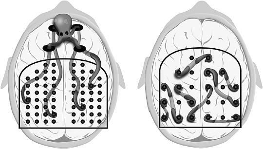
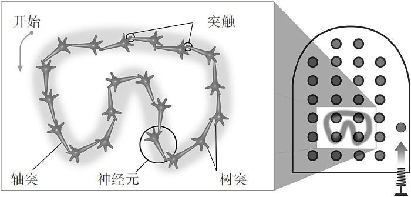
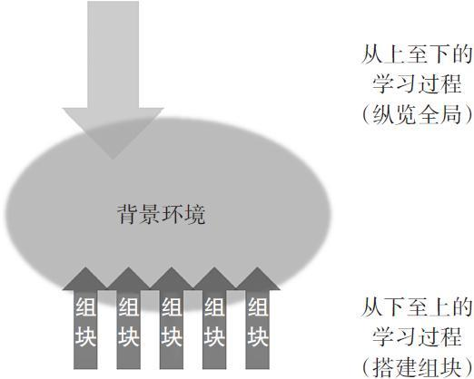
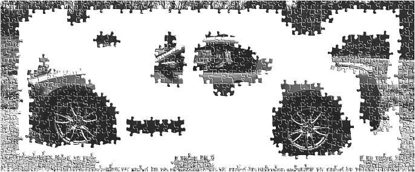
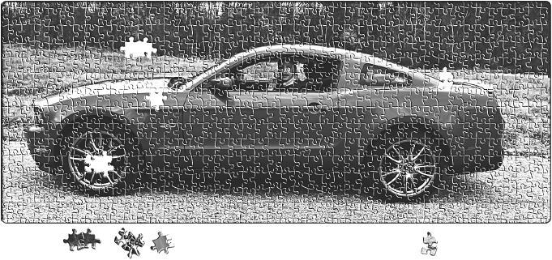
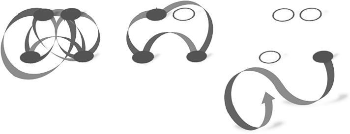
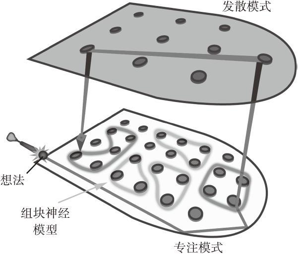
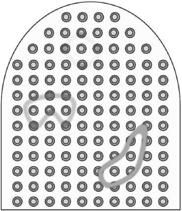
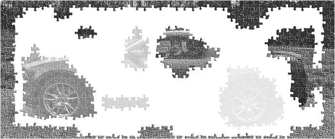
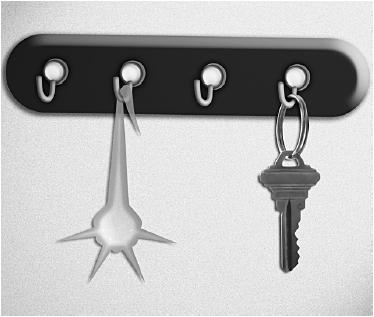

第4章 组块构建与避免能力错觉
“口默念而心得解”的秘诀
说起来，所罗门·舍雷舍夫斯基（Solomon Shereshevsky）第一次赢得老板的注意还是因为一个误会——老板认为他偷懒。
所罗门是一位记者。在20世纪中期的苏联，记者的职责基本类似鹦鹉学舌或是复录机，只要一字不差地把所见所闻写下来就好。每天派发的任务会精确到要见谁，到哪去，获取何种信息。出任务时，除了所罗门之外的其他人都在忙着做笔记，他却只字不写。注意到这一点的主编心生好奇，把他叫来询问情况。
这让所罗门很不解，对于他来说，过耳不忘轻而易举，为什么还要记笔记呢？为了证明这一点，他只字不差地复述了上午的一部分演说。真正让所罗门意外的是，他这样完美而持久的记忆力居然不是人人都有的基本能力。[1]
你想拥有如此诱人的记忆天赋吗？
也许未必。如影随形的超凡记忆力事实上给所罗门造成了困扰。在本章节中，我们会说说这一困扰到底是什么，其中还涉及了注意力是如何与理解（understanding）和记忆（memory）关联在一起的。
聚精会神的时候，大脑在做什么
上一章中，我们了解到思维定式会多么恼人。它将你局限于一种方法里，无法跳出来去寻求更加简单有效的解决途径。可以说，尽管专注通常有助于解决问题，但它有时也会妨碍我们发现新办法。
当你将注意力集中于某件事物时，注意力章鱼的神经触手就将大脑的某些特定部分连接起来。你在关注图形是吗？意识从丘脑后侧向枕叶伸出一只触手，而另一只触手伸向大脑皮层的褶皱表面。结果怎样呢？你的意识轻声低吟：是圆形。
或者你专注的是色彩？那么枕叶内的注意力触手会轻快移动，意识被唤起：是绿色。
更多的触手形成了连接。最终你得到的结论是，自己正注视着一种苹果——美国青苹果（Granny Smith）。再咬上一口！真好吃！
专注模式学习的一个重要部分，就是让注意力把大脑各个部分连接在一起。有趣的是，注意力触手会在紧张状态下失去部分连接能力。这就是当你愤怒、紧张或害怕时，总觉得脑袋有点不够用的原因。[2]
举个例子，你想学说西班牙语。如果你在西语家庭中耳濡目染，学会这门语言自然水到渠成。当母亲说，“叫‘妈妈’”，你就鹦鹉学舌般地叫她“妈妈”，你的神经元被激活，并发放信号点亮它下游的神经元，整条环路都在闪闪发光。这一声妈妈和母亲的笑脸关联在一起，不断加固。这条被激活的神经环路就是一条记忆痕迹（memory trace）。当然，它将与许多相关的记忆痕迹联结在一起。

专注模式下的注意力章鱼（如左图）将触手探入短期记忆的四个入口，从注意力高度集中的大脑里塞得紧紧的神经弹柱中选出四个连接在一起。而发散模式（如右图）的神经弹柱分布得更加分散，这种模式下的联结组合，更是一片纷乱复杂。
说到最好的语言培养项目，国防语言学院教会我俄语的经历绝对算得上其中之一。这些项目往往充斥了大量重复和死记硬背的环节，以及专注模式的语言学习。当然，同时还会有更多发散模式的学习，比如和母语者自由对话。当你对基本词汇和句型烂熟与心时，自然可以像使用母语一样轻松自如，富于创造力地用新语言交谈。[3]
专注的练习和重复是创造记忆痕迹的过程。无论是一记完美的高尔夫击球、主厨熟练翻动的煎蛋，还是百投百中的罚球，核心皆在于此。舞蹈也一样，从笨拙的单脚旋转到优雅的专业舞者，要经历漫长的努力。任何专业技能的培养都是积跬步以成千里的过程。你对自由旋转、足跟转、踢腿动作的琐碎记忆，最终会结合成更完整、更具创造力的肢体表达。

左图象征着发放的神经元链接成一条回路，形成知识组块的过程。右图是象征心智的弹球机，里面显示着与左图相同的图案模型。当你需要时，这样的记忆痕迹会被轻松唤起。
组块是什么？所罗门的组块难题
所罗门的超人记忆并非完美，相反，其中有着惊人的缺陷。他的每一条记忆痕迹都包含着鲜艳的色彩和丰富的情感——也就意味着极其丰富的连接，而这妨碍了所罗门对记忆痕迹进行整合，进而创造概念性的组块（chunks）。每棵树对于他而言都太生动明显，结果自然是只见树木不见森林。
组块是根据意义将信息碎片组成的集合。你可以把字母p，o和p连在一起，组成一个有意义的、便于记忆的组块——单词pop。这就像把电脑中繁杂的文件放在一起，保存成.zip格式的压缩包。在pop这样一个简单的组块下，是神经元之间的琴瑟和鸣，它们通过相互配合形成了和谐一致的音调。不管是名词缩写、想法，还是概念，都依赖于复杂的神经活动，将我们简化而抽象的思维组块捆绑在了一起。可以说，思维组块都是绝大多数科学、文学和艺术知识的构成基础。
让我们举个例子。20世纪初，德国研究者阿尔弗雷德·瓦格纳归纳出了大陆漂移学说。瓦格纳边分析地图，边思考他在研究探索中收集到的信息。突然间，他意识到，不同的大陆块可以像拼图一样拼合起来。不同大陆块之间岩石和化石存在的相似性更增加了说服力。一旦瓦格纳将线索拼凑起来，很久以前曾集合各大陆于一身的古大陆就跃然眼前。沧海桑田，古大陆崩裂，碎片四处漂移，最终形成了今天被大洋分隔的各个大陆板块。
大陆漂移！天哪，这个发现真是太了不起了！
但就算所罗门读了同样的故事，他也没办法明白大陆板块漂移是怎么被发现的。尽管他能重复故事中的每个字，却很难理解大陆漂移的概念，因为他无法把自己的记忆痕迹连接在一起，创造出概念组块。
所以说，要熟练地掌握数学和科学知识，就要创造一些概念组块——这是通过意义将分散的信息碎片组合起来的过程。[4]把要处理的信息构成组块，可以使大脑更高效地运转。只要把一个想法或概念构成组块，就不必纠缠于所有微观的基础信息了，因为你已经学会了提纲挈领（组块），有它就足够了。比如早晨穿衣，通常你只是简单地想着“我得穿上衣服”。但当你意识到，是一个思维组块替代了其中复杂的基础活动，一定会感到很神奇吧！
那么，当你在数学和科学领域中求索时，又是如何构成组块的呢？
构成组块的基本步骤
塑造关乎不同概念和步骤的组块有多种方法，它们通常相当简单。比如，你掌握大陆漂移概念的时候，就构造出了一个简单组块。但这本书的主旨在于从宏观上指导数学和科学的学习，而非只关注地质学，所以我们首要说明的组块能力就是理解并运算某种数学或科学问题的能力。
当你接触新的数学或科学知识，例题中几乎总会提供现成的解题方法。因为首次尝试理解问题解法会让你的认知负担很重——以现成的完整解法开始要好一点。这就像，如果你要在陌生的道路上夜间驾驶，会打开GPS定位一样。已有解法的大部分细节都摆在面前，你的任务仅仅是弄明白它们存在的原因。这能帮你看清问题的关键特征和基本原理。
一些教师不喜欢给学生额外的已有解答或真题，他们觉得学生需要面对困难。但大量事实证明，获得各种资源更有益于学生加深理解。[5]有人担心，用现成的例题去建构思维组块，会导致学生无法专心思考单一步骤的成因，也不会去关心步骤间的联结（connection）——就是说，他们认为学生不会再去关注为什么这道题的下一步要这样做。记住，借鉴例题可不是让你一刀切地不动脑筋、“听话照做”，而更像是借助旅行向导开始陌生之地的旅程。在向导的陪伴下观察身边发生的一切，很快你就会发现自己可以独自探索。你甚至开始另辟蹊径，找到向导不曾告诉过你的路。
当你第一次遇到科学或数学中的全新概念时，往往不知其所云，就像看见左图的拼图碎片一样。如果不理解含义，也不考虑其所在的背景，仅记忆一个事实（如中图），是不能帮你理清头绪的，或者说，你仍不会明白一个概念是如何与其他已学概念拼合在一起的——要注意，这种情况下，拼图碎片没有凹凸状的互锁边缘，没法与别的碎片拼接起来。构建组块（chunking）（如右图）能帮你利用意义，组合起信息碎片，这是一种心智上的飞跃。新的逻辑整体更便于人们记住组块所包含的信息，也便于将其融入更大的学习背景。
1.进行组块的第一步，就是把注意力集中在需要组块的信息上。[6]开着电视当背景音，或是几分钟就查查手机电脑上的信息回复一下，你就别想构建组块了。因为你的大脑根本没有真正专注于此。着手开始学习新东西，既要创造新的神经模型，也要把新模型和遍布大脑各处的既有模型联结在一起。[7]要是你走神，章鱼触手可就抓不紧了。
2.组块活动的第二步是理解（understanding）。要把基本概念打包成组块，首先要理解这个基本概念。不管这个概念是大陆漂移、力与质量的比例关系，或是经济学的供求原则，又或是某种数学难题。暂时只要求基本理解，即合成信息得出关键要义就好。虽然所罗门对此感到很难，但大多数学生都能顺理成章地理解这些主要概念。至少，如果他们按照所讲，进行专注和发散模式的交替思考，总能理清头绪，把握概念。
理解力就像强力胶，能把基础的记忆痕迹黏合在一起。它铺展出各种各样的痕迹路径，将记忆痕迹联结起来。[8]所以说，没有理解在先，你还能创造新的组块吗？一定要说，倒也不是不可以，但是与其他学习材料不匹配的组块，又有什么用呢？
还有一件重要的事，仅仅理解某问题的解决方法，不足以创造日后能随时回想的组块。别以为理解问题时“灵光一现”的小突破，就是扎实的真本事了！（课堂上老师一讲你就掌握了概念，但课后如果不赶快复习，等到考前才复习，概念似乎又变得难以理解了。这个经历你肯定不陌生。）合上书本后再找些问题来测验一下新学到的解题方法，会提高你在本阶段的学习效率。
3.组块的第三步，是获取背景信息。你所看到的将不仅是如何进行组块，还有何时何地使用它们。背景信息意味着跳出初始问题，用更宽广的视角看问题。在相关或不相关的问题上反复推敲、练习，使你不仅能了解组块的用武之地，也能清楚它何时派不上用场。这将有助于你在更大的宏观图景中定位新组块。当然了，就算你的百宝箱中无所不有，但你要是不知道能用在哪儿，它也只能寂寞地待着，而派不上用场。还有，练习可以增加神经元网络的带宽，这样连接到组块的神经线路不仅稳固，而且“条条大路通组块”，它会成为多条痕迹路径上的一站。
有些组块同时与概念和流程相关，相辅相成。如果你解决了许多数学题，就会进一步认识到解题步骤的原理，或是为何有效。一旦理解了基础概念，就算出错也更容易找出问题所在。（的确，你会犯错，但这没坏处。）理解基础概念，也让人更易于把知识用到新问题上，这种现象叫作迁移。后面我们会谈到更多有关迁移的内容。
从下图可见，学习活动的发生包括“以上至下、从下至上”两个方向。从下至上的组块过程，是指学习过程中的练习与重复可以帮助建立和加固每个组块。这样如果你需要信息，就可以轻松地从记忆中获取。还有一个是从上至下“纵览全局”的过程，这一过程能让你看到知识在宏观图景中的位置。[9]两个过程对熟练掌握学习材料都有重要作用。而背景环境正是两个过程的交汇之处。这里要说明，学会如何使用某种解题技巧，也是一种组块能力。而背景环境则意味着学会因地制宜地做出选择。
要构成组块并匹配到更广的概念视角中，这些是关键步骤。
但还不止于此。

从上至下的宏观学习，和从下至上的组块活动，在你成为数学家或科学家的道路上，都发挥着重要作用。
该洗洗睡了
我告诉学生，内化的会计基础知识像在键盘上打字一样，它会变为自己的一部分。就像我不需要想着打字的动作，系统组织思想就会指挥着双手输出了这些话。每堂课末尾，我都会不厌其烦地叮嘱学生，在掖好被子睡觉前，要看看借贷法则和会计恒等式。这是为了让他们睡前最后一眼看的是反复念诵的会计知识。当然！除了冥想和祈祷，得由这些知识为当天画上句号。
——黛布拉·加斯纳·德拉根（Debra Gassner Dragone）
特拉华大学会计学教师

快速浏览章节，或去听一场条理清晰的演讲，都能让你获得宏观图景。它会指引你看到自己构建的组块在宏观图景中的位置。要最先了解重点概念和要点——它们往往是一位合格老师的关键教学部分或是书籍的章节大纲、流程图、表格，或思维导图的核心内容。只要完成这一步，接下来就可以填充细节了。在学习即将收尾时，完整知识版图就算还缺上几块“拼图碎块”，也不会影响你总览宏观图景。

能力错觉与回想的重要性
试着回想学习材料，即提取练习（retrieval practice），效果比单纯阅读材料好得多。[10]心理学家杰弗里·卡皮克和他的同事表示，许多学生都曾在学习中体验过能力错觉（illusions of competence）。卡皮克发现：“大多数学生不断重复阅读笔记或课本（撇开这种学习策略有限的优点不说），却很少有人在学习时进行自我测验或做提取练习。”[11]当书本（或谷歌）摆在眼前时，大脑会产生错觉，以为学习材料也同样存入了大脑，可这只是小和尚念经。看书毕竟比回想简单多了，学生因此执迷于自己的错觉——坚持低效率的学习方式。
所以，确实许多人求知若渴，也费时费力，却没学到什么东西。著名的心理学家兼记忆专家艾伦·巴德利写道：“只有用对了学习策略，求知心才不会落个竹篮打水一场空。”[12]
说一件你可能会惊讶的事，那就是划重点和标下画线一定要谨慎，否则你不仅会效率低下，而且会被误导。画线的动作会让你欺骗自己大脑在工作，其实只是手在动而已。做标记前，要先训练自己找到主要观点，并把所做标记数量降到最少——一句话就行了，最多不要超过一个自然段。[13]在留白区域记下总结好的关键概念也是个好办法。[14]
在学习中进行回想——让大脑提取关键概念，而非通过重复阅读被动地获取知识，将让你更加集中高效地利用学习时间。下一次重读开始前的间隔时间才是这件事真正有效的部分。利用重读间隔中进行的回想，训练了你的大脑。[15]
同理可得，你要争取独立解决家庭作业中的数学和科学难题。部分教科书的最后几页会写着解题方法，但除非是用来检查答案对错，否则最好不要去看。这样才能保证学习材料在你脑中留下更深刻的印象，让你在真正要运用知识时，更加轻松地即取即用。所以老师总在强调，你只有交作业，他才能对你的试卷和家庭作业进行答疑。这样的要求是在督促你自己解决问题，并对想法进行自我检验。你反馈给老师的不仅是问题解答，还有你的思考痕迹。带着这些额外信息，评分老师才能提供给你更有用的反馈。
别扔太久之后才去练习回想，那样你每次都得从头开始巩固概念。特别是对初次学到、还颇有挑战性的知识，最好是24小时内就和它们亲近一下。这就是为什么许多教授建议，如果可能，要在听过课程的当晚再写一遍笔记。这样做有助于巩固新形成的组块，也能揭露自己理解上的漏洞。而教授最喜欢针对理解漏洞出试题。了解自己的知识漏洞，是查漏补缺的第一步。
一旦把东西写下来，就可以把下一次的“防忘”复习拖久一点，慢慢变成几周后复习一次，再之后几个月一次，最终你不必再和遗忘做斗争，写下的内容几乎成了你永远的记忆。（记得回访俄罗斯那会儿，我被一个出租车司机惹火了，25年都没说没用的俄语竟脱口而出，我都不知道自己还记得这些词！）
让知识成为你的第二天性
课堂中学到一个概念和能用概念解决一个实际问题，完全是两码事，这也正是一名普通学生和一位老练成熟的科学家及工程师的不同之处。就我所知，要实现概念到应用的飞跃，唯一方法就是不断地运用概念，直到其变成自己的第二天性，就可以像使用工具一般信手拈来了！
——托马斯·戴（Thomas Day）
麦克纳利.史密斯音乐学院，音频工程学教授
稍后，我们将探讨一些有益于学习的应用软件和程序。现在先来看看这个，某些设计精良的电子闪卡系统，比如Anki，它内置有适当的重复间隔时段，以便让学习新知识的效率达到最优。
这类“学习—回想”软件的思路，与下面工作记忆的图例类似。正如之前提到的，工作记忆有四个或几个位点。

最初把概念打包成组块时，工作记忆会被先前的零碎内容塞满，如左图所示。组块活动一开始，你会感到脑中的联结更加轻松流畅，如中图所示的那样。一旦概念组块形成，如右图，它只会占用工作记忆的一个位点。同时，它会化为一条流畅的思路，你可以轻松得到它的指引，并创建新的联结。这样，工作记忆其他的空间就腾出来了。那条倒挂着的带束，是一条含有组块信息的思路，在某种意义上，它增加了工作记忆的可用信息量。要是把工作记忆的位点看作一个超链接，它链接到的就是一个有巨大信息量的网页。[16]
刚开始学习解决问题的时候，整个工作记忆都会投入这一过程。正如左图中不同的位点之间，错综复杂地纠缠在一起的连接。一旦你对某个概念或方法的认识变得流畅，并把其囊括到一个单元组块里，如右图所示，你的思路会变得像条光滑的丝带。长期记忆同样参与组块活动。包含长期记忆的组块可以释放工作记忆空间，让它能有空闲处理其他信息。不论何时何地，你的丝带（组块）都能从长期记忆溜进工作记忆的工作区域，跟着这条思路的缎带，你就能顺利创建新的连接。
现在你就能理解，为什么独立解决问题是那么关键，而不是谁来写写答案都行。如果你只是看着答案做题，然后自欺欺人地说“太好了我懂啦”，那么答案根本就不属于你，因为你几乎没有把这些概念编织到基础神经回路上。仅仅看一眼问题答案，就以为自己会了，这就是学习中一种最普遍的能力错觉。
该你试试了！
理解能力错觉
混字游戏通过重排字母顺序，得到一个新的单词或短语。比如说，如果给出一个短语“Me，radium ace.”，你能对其重新排序，然后得到一个备受尊重的物理学家的名字吗？[17]可能要动动脑筋吧。但如果在这一页就让你看到答案，紧接着你就“灵光一现”，认为自己玩混字游戏的能力要比实际强多了。
如出一辙的是，学生也常误以为重新读一遍面前的教材就能学会。因为近在眼前的答案让他们产生了能力错觉。[18]
从笔记里挑一个数学或科学概念，或者从书中某一页挑都行。读一遍，然后拿开，看看自己能回忆多少内容，同时，试着去理解你正在回忆的内容，然后再把目光转回来，重读概念，再试着回忆一次。
在练习的最后，你可能会惊讶，仅凭这样简单的回想就能大幅度地增进你对此概念的认识。
如果你想要熟练掌握材料，以此考出好成绩或是在此基础上创造性思考，你就必须让它们牢牢地钉在记忆里。[19]以创新方式合并组块的能力，为历史上许多重大发明奠定了基础。史蒂文·约翰逊（Steven Johnson）在他的杰出著作《好想法从何而来》（Where Good Ideas Come From）中写到了“慢直觉”（slow hunch）。他是指，专注与发散的思维过程经过长年累月地细火慢炖，产生创造性的突破。达尔文的生物进化论，以及万维网都诞生于此。[20]“慢直觉”的关键就是要用多角度思维感知一个概念。那样，概念的方方面面会临时而随机地组合在一起，直到最终，你的创意如出水芙蓉般诞生。[21]约翰逊写到，比尔·盖茨等各个业界的领军人物会整周地阅读，一次性处理大量不同方向的想法。让未及忘却的鲜活概念，彼此连接成网络，这强化了他们的创新思维。（这里有非常重要的一点，创意丰富的科学家与专业能力强但缺乏想象的个体之间的差异，关键就在于兴趣的广泛程度不同。[22]）
头脑中馆藏的组块思维越丰富，解决问题对于你来说就越容易，而且组块经验越丰富，你越会发现自己可以创造出更大规模的组块——丝带越来越长。
你也许会想，自然科学和数学里的一章节有那么多问题和概念，根本没法一次性学完！现在就该由机遇的法则登场了：幸运女神只眷顾努力的人。[23]
请专注于你正在钻研的部分。你会发现，一旦把首个问题或概念存入脑中的图书馆，不管存入的是什么，第二个概念进入脑中就变得容易一些。第三个同样不会太难。不是因为这些问题本身简单，而是随着你的努力，这一过程变得更轻松了。
搭建组块资料库的过程，也是训练大脑的过程。你的大脑不仅要能识别某个特定问题，还要能识别不同形式和类别的问题，这样才能自动快速地对症下药。慢慢地，你逐渐发现这些组块模型可以简化解题方式，并让你快速揪出已经潜伏在记忆边缘的多种解决技巧。这样，在期中或期末考试之前重温知识点，让心中的答案蓄势以待，就不是一件难事了。

如果你能够将脑中存储的大量概念和方法都内化为组块模型，那么发散模式的轻声耳语就会为你指出通往正确答案的路途，而且发散模式还能用新方式连接起两个或以上的组块，帮你解决不同以往的难题。
解题的途径有两种：第一种，是按顺序逐步推理；第二种，是更多跟随整体直觉。序列式思维是与跳跃式思维相对的思维方式，每一个小步骤都明确指向问题的答案，这也正是专注模式的用武之地。而直觉通常由看似不同的聚焦模式思维联结而成，需要的是创造性的发散模式发挥作用。
大部分难题都是由直觉解决的，因为它们与你熟知的事物截然不同。[24]要记住，发散思维会以半随机的方式创造联结，所以你需要通过专注模式对它给出的答案仔细验证。直觉并不总是对的！[25]
该你试试了！
理解困难怎么办
如果你不能理解课程中提到的方法，不妨驻足回顾一下。上网找找最先解决这个问题的人，或者那些最早使用这个方法的人。试着去理解那位颇具创造力的发明者，他是如何得到的概念，又是如何使用概念的。你往往可以找到一个简单解释，通过它你基本能认识到这种解法的必要性，以及使用这种方法的原因。
常练不忘
我在前面说过，仅靠理解现状是不足以创建组块的。看过下面的“脑”图，你就能有一个大概认识。图中这些环路（loops），实际就是延长的记忆痕迹。因为你把自己的理解编织在了一起，它们才显现了出来。一个组块，不过是一个更加复杂的记忆痕迹。图片顶端有个若隐若现的组块。它还是个新生儿，你理解了一个概念或问题，做了一两次练习之后，它就开始浮现出来了。中间那个颜色要更深一些，是更强大的神经模型，每次你得多做些练习，并在更大的背景信息下审视组块，它才会出现。最下面的组块颜色最深。那是个固化组块，它已经深深刻在你的长期记忆中了。

解决数学和科学难题，就像在钢琴上弹一首曲子。你练得越多，神经模型就越坚实，颜色就越深、越强壮。
顺便提一句，一天之内再次强化学习模型，在构造神经模型的起始阶段至关重要。如果不强化，学习模型很快会从脑海中消失。后面，我们将对学习中的“间隔重复”（spaced repetition）进行更多讲解。另外，你也会因为在一个问题上反复犯错，加固脑中“错误”的解题过程。这就体现了检查纠错的重要性。如果你只是偶尔歪打正着，却没有意识到解题步骤是错的。那么就算得到了正确答案，也会被它误导。
构建组块的重要性
数学知识可以被奇妙地压缩。为了推敲同一个过程或思路，你也许会折腾很久，举步维艰地尝试各种方法。可是你一旦理解透彻，并从宏观思维角度把它视为一个整体，不出意外，你的思维会被高度压缩（就像压缩文件）。你可以把它放进大脑的仓库里，需要时就能快速完整提取，并直接运用到其他思维进程！根本不需要再逐步重来一次。浓缩的思维让人获得洞察力，数学真正的乐趣之一就在于此。[26]
——威廉·瑟斯顿（William Thurston，1946—2012）
菲尔兹奖（数学界最高荣誉）得主
重复与练习的背后是大脑在创造固化组块，难点就在于它们会让人觉得枯燥乏味。更糟糕的是，要是老师不靠谱，比如我曾经的数学老师“坏脾气”先生，练习就变成了没完没了的折磨。暂不说人们时而对练习的误用，练习还是很要紧的事。谁都知道，要掌握象棋、语言、音乐、舞蹈中的组块模型，绝非朝夕之功。任何值得去努力的事情，没有重复练习都是不行的。好老师都会解释为什么你值得在练习与重复上下功夫。
最后，如果想对学习材料了如指掌，那么从上至下的宏观视角和从下至上的组块能力都不可或缺。我们都喜欢创新，以及能够纵览全局的学习。但在数学和科学的学习中，必须进行适量的练习和重复，否则就无法构建组块来支撑专业技能。[27]
期刊《科学》（Science）中发表的一项研究为以上说法提供了确凿证据。[28]研究者让学生在学过一段科学性文字后，通过尽可能回想信息进行练习。之后再次学习该文段内容并回想（即让他们努力记住关键概念）。
结果怎样呢？
相同时间内，仅靠对材料的练习和回想，学生的习得内容和学习深度都远远超过了其他方法，人们本以为，仅对文段进行多次重复阅读或画概念图，应有助于增进脑中学习材料间的联系，而事实并非如此。这种改进的学习方法，不管是在正式考试还是自我检测中，都能派上用场。
这就进一步印证了之前提到的观点。提取知识和回想知识让我们不仅仅是重复的机器——提取过程本身增加了学习深度，并帮助我们逐渐形成组块。[29]让研究者更加意外的是，学生自己觉得仅对学习材料进行阅读和回想并不是最好的学习方式。他们觉得概念导图（画出概念间关系的简图）才是最好的学习方法。但如果基础组块还没嵌入脑中，就试着在组块间构建联结，完全是空中楼阁。这就像甚至还不懂棋子该怎么摆，就想去学象棋的高级策略。[30]
在各种情境下练习数学、科学的难题和概念，能有助于你构建组块——这些组块是可靠的神经模型，含有深刻且丰富的背景信息。[31]实际上，学习任何新技能或新学科的时候，你都需要在不同背景环境中进行大量的练习。这样做能帮你构建所需的神经模型，让新技巧顺利成为你思维方式的一部分。
常把知识挂嘴边
凑巧的是，我用过这本书提到的很多学习技巧。我本科选了物理化学专业，而且迷上了公式的推导，渐渐就养成了攻克书中的每一道题的习惯。这样一来，我的大脑总能迎难而上。到了期末，每遇到一题就会立刻知道解法。我尤其建议理科专业的人采用这个策略，当然，对非科研工作者也同样适用。同时我也说到了每天学习的重要性，可以每天只学一会儿，但要保证所学知识能脱口而出。用双语学习为例，我去法国工作时，花了好多天才适应法语，之后就顺风顺水了。结果刚回到美国的头两天，学生或同事问我一些问题，我甚至还要犹豫一下用英语该怎么回答！就是说，如果你每天都有练习，那么这些信息就自然在嘴边，不必去搜肠刮肚了。
——罗伯特R.加马什（Robert R.Gamache）
麻省理工学院罗威尔校区协理，副校长，负责教务、学生事务及国际关系事务
到书桌外的世界回忆材料：散步的意义
让自己的身体活动一下，在难以理解关键问题时会特别有帮助。比如之前故事中提到的那些创新性科学突破，外出散步时的产物比比皆是。[32]
另外，离开平时的学习地点，到别处回想材料，可以让人从不同的角度看待问题，从而增进理解。人们在不同的房间参加考试时，有时会失去来自潜意识的提示。在多样的外部环境中思考材料，你将不再依赖来自任何一个地点的提示。这能避免从自己的书桌转换到陌生的考试教室时出现的问题。[33]
内化数学和科学概念比起记忆一列中文单词或吉他和弦要简单多了。毕竟，问题能与你对话，而且会告诉你下一步需要做什么。这么看，解决数学和科学上的问题就像跳舞，你的身体会提醒你下一个动作该怎么做。
不同问题的回顾时间段不同，这取决于你的学习速度和方式。[34]当然了，生活中除了学习某个问题，你还肩负其他重任呢。这要求你根据轻重缓急规划任务量，还要记住，必须为发散模式的运转留些时间。这样一口气下来，有多少知识能得到内化呢？这得看情况，每个人都不一样。不过，数学和科学中，内化解题办法的真正美妙之处就在于：练得越多，题目就变得越简单，对你的帮助就越大。
整理，组块：战胜自己
在帮助那些在学习苦海中挣扎的学生前，我总会先问他们是如何整理课堂笔记和阅读笔记的。往往第一次面谈中的大部分时间都花在探讨如何整理并对信息进行组块，而不是我对着学生解释概念上。一个星期后，他们会带着已经梳理好的材料，再次回到我面前，他们都没想到自己竟记住那么多内容。
——杰森·德尚（Jason Dechant）
博士，匹兹堡大学护理学院，健康促进与发展学系，课程主任

如果组块越来越多，而你又疏于练习，拼凑宏观视图会难上加难，因为拼图的碎块已经暗淡不清了。
穿插学习法，解决混杂交错的各种问题，而非在同一个问题上过度学习
做到“口默念而心得解”的最后一个重点提示。[35]穿插学习，是指把解题策略不同的题目混在一起练习。
从老师或课本那里学习一种新解法的时候，为了学会这种新技巧，一段学习期间内，你总倾向于不断练习。在完全理解之后，仍持续不断地学或练，我们称之为过度学习。过度学习当然有它的用处，比如在网球发球或进行完美的钢琴协奏时产生一种即时反应。但要警惕在学习数理过程中不断地过度学习，研究显示这会浪费你宝贵的学习时间。[36]（不过要是在下一个学习阶段，把它与其他解法一同回顾就还好。）
总而言之，一旦理解了基本概念，在这个学习期间内再继续巩固概念，并不会如你所愿地去强化长期记忆中的各种联结。更糟糕的是，甚至会有副作用。只关注一个技巧，像是木匠学徒只会用锤子一种工具。一段时间后，还以为不管什么疑难杂症，只要一锤子下去都能解决。[37]
但实际上，要掌握一门新学科，是要学会挑选使用恰当的解题技巧的（不能只会用锤子）。唯一的解决途径就是去练习各种题目，运用不同技巧解决这些问题。学习期间一旦巩固了一种技巧的基本思路（这时会有点像骑在有辅助轮的自行车上），你就要开始穿插练习不同类型的题目。[38]偶尔这会有点难度。因为，举例来说，往往书中某章节会专讲一个特定技巧，所以当你翻到那部分，你就已经知道这章题目中要使用何种技巧了。[39]但我还是要说，尽可能地穿插混合着学习。这有利于前瞻性地看待章节最后可能出现的各种问题。或者，你可以偶尔刻意地去做一些解题技巧完全不同的题目，然后弄清这种差异的原因。你需要让大脑逐步接受这个道理：仅知道怎样使用特定的解题技巧还不够，还得知道何时何地去使用才行。
你可以制作一些索引卡片，问题写在一面，题目和解题步骤写在另一面，然后洗牌，随机抽出一张，让大脑从各种解题技巧中找出一个合适的来。第一次回顾卡片，可以坐在课桌或饭桌前，看看在不偷看背面的情况下，自己可以在白纸上写出多少答案。稍有把握之后，再换到别处复习卡片，甚至出门散步也可以。把最初问题作为线索，让大脑回应出解题步骤。如果有必要，之后可以翻过卡片，验证一下自己的所有过程步骤。这样做，基本就是在巩固一个新组块了。另一个建议是，打开书本，任选一页做上面的题目，尽可能不要去看除了问题之外的内容。
与其过度学习，不如穿插学习
道格·罗勒（Doug Rohrer），来自南佛罗里达大学的心理学教授，对数学、科学学科中的穿插学习法（interleaving）和过度学习法（overlearning）进行了大量研究。他写道：
许多人相信，过度学习就是通过不断地学和练来掌握知识。但是在科研文献中，这种表达是指学生掌握了某些理念，但仍对其不断地进行钻研和练习。一个例题或许就能帮其获得某个数学难题的正解，可紧接着他又重复了更多同类题目。尽管，做更多同类题型（与其少做不如多做的心态），常常能让接下来的考试成绩突飞猛进，但在整个学习过程中，刚学会就做太多同类题目，效果不增反减。
不管在教室还是哪里，学生应在每个学习或练习的单元时间内，把学习内容量尽量最大化，也就是应该让自己的学习时间得到超值的回报。怎样才能做到呢？文献无一例外地回答：与其在同类技巧、概念上投入太长时间去学和练，不如把精力分配到更短的学习时间段上，以避免过度学习。这不是说长时间学习就一定是坏主意。只要学生不在同类技巧或概念上投入过多精力，那么学习时间长一点并没什么坏处。一旦理解了概念“X”，学习重心就应该转移到别的概念上，过几天再来回顾概念“X”。[40]
最好是用手把这些最初的解题方法、图表或概念都写下来。事实证明，手写比输入能让人更轻松地记住概念，[41]而且，往往手写Σ或Ω这样的符号，比起搜索然后键入符号要简单得多（除非你常用这些符号，并记得它的快捷键）。[42]如果你想通过拍照或扫描来做记录，再把它载入智能手机或电脑的翻卡软件，也会有不错的学习效果。注意，一个常见的能力错觉，就是仅仅因为成功解题会带来良好的自我感觉，你就不断去练习一个已经会用的技巧。要穿插安排学习内容，在考前复习中折腾一番，比如在不同章节材料中跳跃着复习题目，有时会让你感到学习变得更加困难。但实际上，它帮你加深了对学习内容的理解。
避免照猫画虎：练习改变思维
学生做家庭作业的时候，经常能在同一个问题上连错10次。做个两三道题，就开始不动脑子想了，他们会直接按前面的解题方法照猫画虎！我告诉他们，如果要做9.4节的作业，就在做完9.4中的一些题目后，回头再去做一做9.3节的题目。接下来可以多做几道9.4节的题目，再回过头做一道9.1节中的题目。这样一来，可以让他们锻炼考试中需要的思维转换能力！
我也相信，太多的学生只是为了交差而写作业。他们做完一道题，去对照一下后面的标准答案，微微一笑就接着去做下一道题了！我建议他们在这个“微微一笑”和“接着做下一题”之间加上一个步骤——请扪心自问：假如考试中我遇到的这道题和其他问题混在一起，而且我不知道它在课本上的出处，我还会这题的解法吗？学生应该从准备考试的角度，去思考每一道作业题，而不是仅把作业当作一部分任务去完成！
——迈克·罗森塔尔（Mike Rosenthal）
佛罗里达国际大学，数学高级导师
本章小结
·练习有助于构建强壮的神经模型——那就是，形成理解的概念组块。
·练习能带给你流畅而敏捷的思维，这正是考试中需要具备的。
·构建组块的必需品：
·专注力（focused attention）；
·对基本概念的理解（understanding）；
·练习（practice）帮助你获取宏观背景信息。
·简单回想，试着关上书回忆要点，是促进组块形成的最好办法之一。

某种意义上说，回想有助于形成神经挂钩，这样就能把思维悬挂在上面。
学习提升
1.组块是怎样与记忆痕迹联结起来的？
2.挑一个与你热衷的话题相关的组块，描述一下。要求是，它最初让你焦头烂额，现在却胸有成竹了。
3.从上至下和从下至上的过程在学习中有什么区别？两种方式有优劣之分吗？
4.单凭理解足以形成组块吗？请解释能或不能的原因。
5.你在学习中最常遇到的能力错觉是什么？在未来你有什么策略来避免再次陷入这种错觉之中？
驻足与回顾
下次和一位家庭成员、朋友或同学在一起的时候，复述你已经学到的内容，可以是本书内容或是与你现学课程有关的内容。重述所学内容不仅能增进和分享你的热情，还能理清、加固脑中的概念，这样你就会在接下来的几周或几个月里更好地维持记忆。即使你所学的内容非常高深，只要做上适当的简化，就可以解释给有着不同教育背景的人听，这会极大地帮助你增进对内容的理解。
战胜创伤性脑损伤并用有限的时间去学习：保尔·格鲁什科的故事
保尔·格鲁什科以及激励他重塑生命的妻子和女儿
我在贫困而且动荡不安的国内环境下长大，还差点没能高中毕业。后来，我参军了，作为步兵被派往了伊拉克。一次我们排遭到路边的炸弹伏击，12次中有8次都击中了我的汽车。
巡回任务期间，机缘巧合地我遇到了我亲爱的妻子。她的出现不断说服我选择退役并组建家庭。可问题是我对此毫无头绪。更糟糕的是，回国后我开始遇到各种困扰，比如注意力难以集中、认知障碍以及烦躁易怒，而这些问题是我以前从未遇到过的。有时我甚至几乎无法写出一个完整的句子。后来我才了解到，很多士兵从伊拉克和阿富汗回国后，都受到了未诊断的创伤性脑损伤（TBI）的困扰。
我参与了一个计算机与电子工程技术的学习项目，可当时我的创伤性脑损伤非常严重，甚至到了理解分数（如1/2，3/3）都很费劲的程度。
然而塞翁失马，焉知非福：学习对我的大脑产生了潜移默化的影响。让精神集中尽管很困难，但似乎重组了我的心智，治愈着我的大脑。对于我来说，这就像在健身房运用体能，血液充分进入肌肉，才使肌肉力量得到了提升。我的大脑康复得很及时——以优异的成绩毕业后，我找到一份民用电工的工作。
我决定再回学校考个工科学位。较之技师的实操训练，数学，尤其是微积分，在工程专业学习中显得更为重要。就在这个节骨眼，我开始把小学缺漏的数学基础补了起来。
当时，我已结婚，又刚刚成为一名父亲，成天为工作奔忙。现在我面临的挑战不再只是基本的认知问题，而是时间管理问题。我每天只有几个小时来学习高等数学概念，而它们比我之前学过的还要艰深难懂得多。受了几次打击之后（我的微分方程课得了D，天啊！），我开始尝试更具策略性的学习方法。
每个学期，我都会向教授要一份课程大纲复印件，并且在考前至少两三周就开始阅读教材。我努力比课程领先至少一个章节，尽管到了期中，这种学习步伐几乎难以维持，但我依然试着坚持。在解题过程中进行练习，即构建组块是非常关键的。在我的学习生涯中，逐渐形成了以下几个原则，它们助我圆满完成了学业。我想找到一个不错的职业来维持家庭，正是这些技巧在帮我向这个目标迈进。
在有限的学习时间里，保罗采用的学习技巧
1.读一读（但还不要去做）布置的家庭作业和模拟测试/小试题。迈出这第一步，就可以预热大脑来学习新概念——形成新组块。
2.复习讲义笔记（尽量不落下每一堂课）。上一个小时的课抵得上读两个小时的书。如果我能忠实于上课和做笔记，而不是盯着表只等下课，我的学习效率肯定不止如此。之后几天，趁这些课程在我脑中还记忆犹新，我会去复习笔记。我还发现要是能抽半个小时向教授提问，完全相当于读三个小时的书。
3.重做课堂笔记中的例题。不论老师还是课本提供的解题方法，都不会给你问题反馈。所以现成的答案从来也不能帮我达到练习的目的。有了这些例题，必要时就有了条分缕析的解题参考。重做例题会有助于巩固知识组块。学习时我会使用不同颜色的笔：蓝色、绿色、红色，而不仅仅是黑色。我发现这可以帮我更专注地阅读笔记；内容更明显了，而不是一页杂乱无章的数学大杂烩。
4.完成布置的家庭作业和模拟测试/小试题。这样就可以为大脑构建“记忆肌肉”（muscle memory）组块来解决特定问题。
[1] Luria 1968.
[2] Beilock 2010，pp.151-154.
[3] 儿童通过专注模式学习，但他们也会在不专注时使用发散模式学习，只是缺乏自主控制（Thompson-Schill et al.2009）。换句话说，儿童看起来不像成人在学习新语言时那样需要用专注模式，也许这就是为什么年幼的孩子更容易学会一种新语言。但至少在一些专注模式下的学习，对超出幼儿期年龄段的学习者而言会有必要。
[4] Guida et al.2012，sec.8.最近，Xin Jin，Fatuel Tecuapetla和Rui Costa揭示出基底节中神经元的重要作用，它们发出信号将个体元素串联在一个行为序列中，这就是搭建组块的关键（Jin et al.2014）。Rui Costa已收到200万欧元资金以投入组块机制的研究，他的研究开展让我们拭目以待。
[5] Brent and Felder 2012；Sweller et al.2011，chap.8.
[6] Alessandro Guida和同事（2012，p.235）注意到创造组块最初明显需要依赖前额叶区的工作记忆，组块是专注的产物，专注让组块联结在一起。随着专业水平的不断提高，这些组块驻留在颅顶骨区域的长期记忆中。记忆的一个非常不一样的方面在于它涉及了神经震荡节奏，这节奏有助于结合起大脑许多区域中的知觉和环境背景信息（Nyhus and Curran 2010）。可参考Cho et al.2012，以了解儿童在算术解题的提取流畅性方面的成像研究。
[7] Baddeley et al.2009，chap.6；Cree and McRae 2003.
[8] Baddeley et al.2009，pp.101-104.
[9] 我提到的“宏观图景”可以被想作一个认知模板。参见Guida et al.2012，尤其请参阅sec.3.1。通过数学和科学的学习所产生的模板，会自然倾向于非固定形态，这与下象棋时产生的有清晰轮廓的模板并不相同。如Guida指出，组块搭建的速度非常快，但是涉及功能重组的模板的形成就需要时间，至少5周以上（Guida et al.2012）。也可参见Cooper and Sweller 1987中对图式的讨论，以及Mastascusa et al.2011，pp.23-43。要理解发展专业技能的相关概念，同样具有参考意义的是Bransford et al.2000，chap.2中的讨论，先前知识会在我们学习新知识或相关内容的时候帮助我们，但是先前知识也会成为阻碍，因为它让我们更难在图式中做出改动。这个现象十分明显，从学生对物理概念错误的执念就能看出来，这执念对任何改进建议充满抗拒（Hake 1998；Halloun and Hestenes 1985）。一方面，如Paul Pintrich和他的同事（1993，p.170）写道：“对于学习者而言存在一个悖论：现行观念可能会形成一股抗拒概念转变的力量，但它们却也为学习者提供了框架，学习者可用框架来解释或理解新的、潜在的矛盾信息。
[10] Geary et al.2008，pages 46 through 47；Karpicke 2012；Karpicke et al.2009；Karpicke and Grimaldi 2012；Kornell et al.2009；Roediger and Karpicke 2006。总结综述请见McDaniel and Callender 2008；Roediger and Butler 2011.
[11] Karpicke et al.2009，p.471。也可参考达克效应（Dunning-Kruger effect），指认知不足者出现的盲目自信。Dunning et al.2003；Kruger and Dunning 1999；Ehrlinger et al.2008；Bursonet et al.2006.
[12] Karpicke et al.2009，p.111.
[13] Dunlosky et al.2013，sec.4.4.
[14] Longcamp et al.2008.
[15] Dunlosky et al.2013，sec.7.7.
[16] 尤其请参考Guida et al.2012的内容，其中注明了专家是如何使用长期记忆来拓展自己的工作记忆的。也可参见Geary et al.2008，4-5，其中观察到“工作记忆容载量限制了数学表现，但是在练习中获得的不假思索（即时反应能力）能够克服这个限制”。
[17] 这个变位词游戏的答案是“Madame Curie”。此题由Meyran Kraus提供，http://www.fun-with-words.com/anag_names.html.
[18] Jeffrey Karpicke和他的同事（2009）指出学习中的能力错觉和混字游戏困难之间的关系，在看见答案和没看答案的情形之间做比较。
[19] Henry Roediger andMary Pyc（2012，p.243）指出：“在教育院校中的教授和老师，常为学生的创造力担忧，这个目标让人称赞。我们提倡的技巧，在基本的学习与概念和知识的记忆的提高上都有效果。同时一些人批判这种学习方法是“填鸭式的学习”或“纯粹记忆”，而不是创造性地对知识进行加工合成。难道教育不是为了培养孩子心中的好奇心、发现欲和创造力吗？回答当然是肯定的，但是我们会据理力争，因为扎实的知识基础是在特定领域进行创造的前提。若未掌握一套全面的知识概念，一个学生不可能在任何一门学科得到创造性的发现。学习任何科目的知识概念与创造性思考并不是必然对立的，两者是共生的关系。”
[20] Geary 2005，chap.6；Johnson 2010.
[21] Johnson 2010，p.123.
[22] Simonton 2004，p.112.
[23] 这是我自己对科学中的一个普遍感受所做的个人重述。Santiago Ramóny Cajal在笔记中引用过Duclaux的话，“机会不会向想要的人微笑，而是赐予应得的人”。Cajal接着说道，“科学界就像博彩，幸运眷顾的总是最大的赌注者——也就是说，换个类比来看，幸运眷顾的是不断在自己花园耕作的人”（Ramón y Cajal 1999，pp.67-68）。Louis Pasteur指出，“在观察的领域，机会青睐有准备的头脑"。相关表达还有拉丁谚语“幸运眷顾大胆的人”和英国空降特勤队的格言：“勇者胜。”
[24] Kounios and Beeman 2009[1897]；Ramón y Cajal 1999，p.5.
[25] Rocke 2010
[26] Thurston，1990，p.846-847.
[27] 参考Karl Anders Ericsson在专业技能发展上的基础研究（e.g.，Ericsson 2009）。其他相关天赋发展的颇具洞察力的普遍方法，可参见Coyle 2009；Greene 2012；Leonard 1991.
[28] Karpicke and Blunt 2011a；Karpicke and Blunt 2011b。更多信息，还可参考Guida et al.2012，p.239.
[29] 关于兴趣，左脑前额叶区域在记忆编译阶段中会有活跃表现，同时右脑区域在提取记忆时会被激活。许多研究团体通过使用各种不同类型的成像技术，都报告了这一现象的存在（Cook 2002，p.37）。提取已记住的内容的做法，会有可能在发散模式概念形成初期，创造出地图式的联结吗？See also Geary et al.2008，4-6 to 4-7.
[30] 这里当然需要说明一下。比如，要是让学生通过回忆材料内容，来决定概念地图上会有什么，又会怎样呢？这里无疑在不同学科上存在差异。比如一些涉及生物细胞内通讯过程的学科，出于本质，它们会在我们理解要点时，更主动地配合“概念地图”的方法。
[31] Brown et al.1989.
[32] Johnson 2010，p.110.
[33] Baddeley et al.2009，chap.8.
[34] Ken Koedinger是卡内基梅隆大学的人机交互与心理学教授，他说，“要最大限度地记住材料，最好一开始在短时间内把学生暴露在信息之中，然后不断将学生接触信息的时间加长。不同类型的信息，例如抽象概念与具体事实，需要安排不同的曝光时间"（引用自Paul 2012）。
[35] Dunlosky et al.2013，sec.10；Roediger and Pyc 2012；Taylor and Rohrer 2010.
[36] Rohrer and Pashler 2007.
[37] 看起来用“题海战术”的方法呈现学习材料，会让教学中出现能力错觉。学生看起来学得很快，但是研究显示，他们忘得也快。Roediger and Pyc在（2012，p.244）中指出：“研究结果显示出了为什么老师和学生容易轻易使用那些从长远来看反而效率更低的学习策略。学习时我们非常关注学习方式，我们喜欢采用那些让我们学得更轻松更快的策略。整组练习或题海练习就有这种效果。然而，为了让记忆有更好的长期表现，我们应该使用间隔和穿插的练习方法，但是在学习中，这个过程会显得更加艰巨。穿插学习法会增加学习之初的难度，但因为它让长期记忆效果更好，所以会更可取。”
[38] Rohrer et al.2013.
[39] Doug Rohrer and Harold Pashler（2010，p.406）注意到：“……穿插练习不同题型（数学科学课本中少有提到这方法）对学习的提升效果显著。”
[40] 来自与这位作者的私人谈话，2013年8月20日。也可参阅Carey 2012.
[41] Longcamp et al.2008.
[42] 例证可见于http://usefulshortcuts.com/alt-codes.